- Dopisać teorię o view binding by można było udzielić odpowiedzi na pytania.
W tym ćwiczeniu zbudujemy prostą aplikację do rzucania kośćmi pokazującą, jak tworzyć proste układy (layouts) oraz używać Aktywności (Activities) i Intencji (Intents).
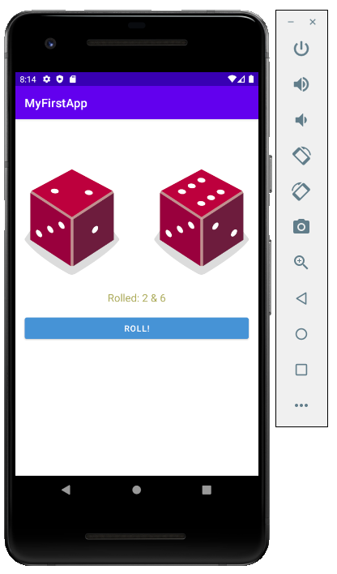
W tym ćwiczeniu nauczysz się, jak:
ConstraintLayoutOtwórz Android Studio i wybierz opcję New Project.
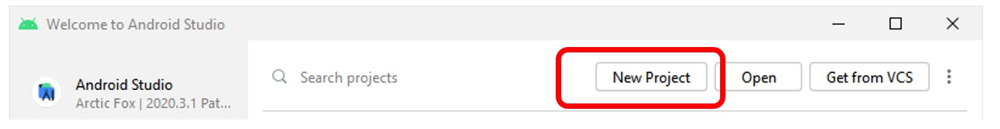
Wybierz szablon Empty Views Activity dla swojej aplikacji. Możesz wybierać spośród kilku predefiniowanych szablonów aplikacji dla różnych urządzeń. Następnie kliknij Next.
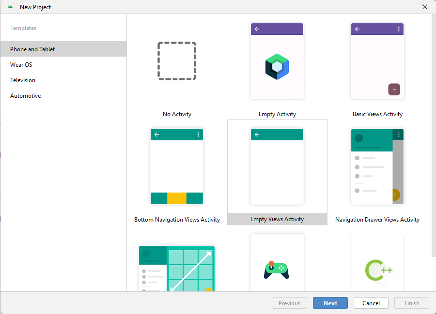
Określ nazwę swojej aplikacji (np. DiceRoller). Utwórz unikalną nazwę pakietu (Package name), która identyfikuje aplikację, np. com.mr.diceroller. Wybierz odpowiednią lokalizację projektu (Save location) i wskaż język używany do napisania aplikacji (wybierz Kotlin). Na koniec wybierz platformę, na której aplikacja będzie działać, i określ minimalny wymagany poziom SDK (Android version). Jako język konfiguracji budowania (Build configuration language) wybierz Kotlin DSL (build.gradle.kts). Kliknij Finish.
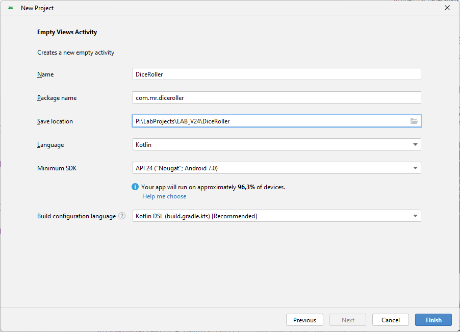
Poczekaj na zakończenie procesu tworzenia projektu.
Pierwszy projekt został utworzony!
Zapoznaj się ze strukturą projektu. Widok projektu można zmienić, wybierając opcje w lewym górnym menu panelu nawigacyjnego (np. z domyślnego widoku Android na widok Project, aby zobaczyć pliki z perspektywy systemu operacyjnego).
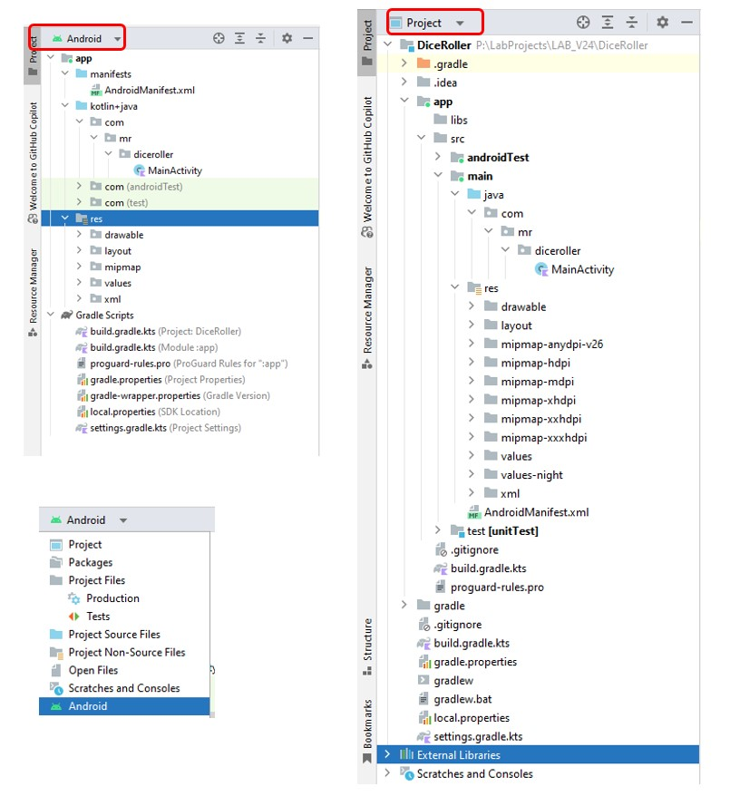
app/src/main/res/layout/activity_main.xml
Plik XML z układem dla aktywności, którą dodałeś podczas tworzenia projektu. Zawiera aktualną treść wyświetlaną użytkownikowi. Plik domyślnie zawiera element TextView z tekstem "Hello world!".
app/src/main/java/package_name/MainActivity.kt
Zakładka z tym plikiem pojawia się w Android Studio po zakończeniu kreatora nowego projektu. Znajdziesz w nim definicję klasy dla utworzonej Aktywności. Po zbudowaniu i uruchomieniu aplikacji, klasa Activity uruchamia aktywność i ładuje plik układu mówiący "Hello World!". Jest to punkt wejścia do aplikacji.
app/src/main/AndroidManifest.xml
Plik manifestu opisuje podstawowe cechy aplikacji i definiuje każdy z jej komponentów.
app/build.gradle (lub build.gradle.kts)
Android Studio używa narzędzia Gradle do kompilacji i budowy aplikacji. Istnieje plik build.gradle dla każdego modułu projektu, a także dla całego projektu. Zazwyczaj interesuje nas ten pierwszy (dla modułu app). To tutaj ustawiane są zależności (dependencies) i ustawienia Androida:
compileSdk: wersja platformy, względem której aplikacja jest kompilowana.applicationId: w pełni kwalifikowana nazwa pakietu.minSdk: najniższa wersja Androida obsługiwana przez aplikację.targetSdk: najwyższa wersja Androida, na której aplikacja była testowana.app/src/main/res
Podkatalogi znajdujące się w /res zawierają zasoby aplikacji:
drawable/: Katalog dla obiektów graficznych (takich jak bitmapy).layout/: Katalog dla plików definiujących interfejs użytkownika, takich jak activity_main.xml.mipmap/: Katalog dla plików ikon aplikacji.values/: Katalog dla innych plików XML zawierających zasoby, takie jak definicje ciągów znaków (strings.xml) i kolorów (colors.xml).Otwórz plik activity_main.xml (jeśli nie jest jeszcze otwarty).
Zbudujemy docelowy układ zawierający dwie kości do gry, przycisk i pole tekstowe.
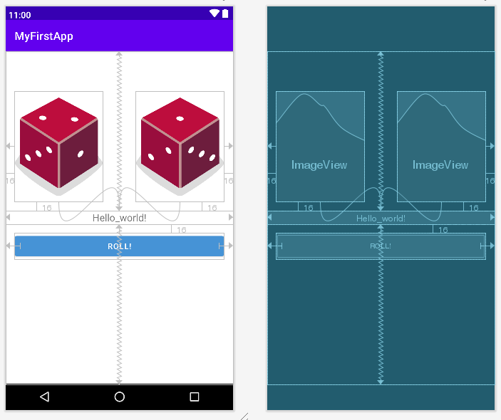
Dodaj dostarczone obrazy kości (dice_1.png do dice_6.png) do folderu drawable, przeciągając je tam lub wybierając opcję Import Drawables w zakładce Resource Manager po lewej stronie.
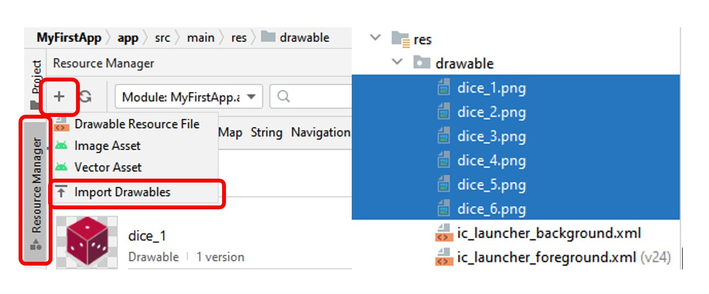
Dodaj dwa obiekty ImageView i jeden Button do istniejącego już TextView, przeciągając widżety z palety (Palette) do okna i zmień ich identyfikatory (używane do dostępu do elementu z poziomu kodu) w zakładce Attributes:
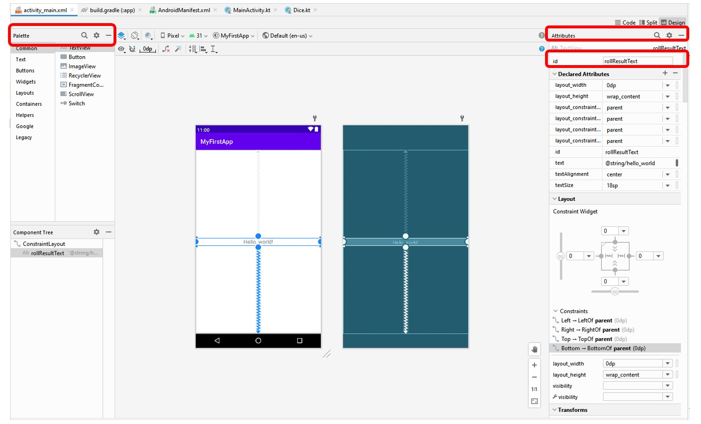
| Element | Id |
|---|---|
| Pierwszy ImageView | dice1Img |
| Drugi ImageView | dice2Img |
| Przycisk (Button) | rollButton |
| Tekst (TextView) | rollResultText |
Podczas dodawania obrazów zostaniesz poproszony o wybór grafiki. Wybierz jeden z dodanych obrazków kości.
Ustaw pozycje elementów, definiując ograniczenia i inne odpowiednie parametry. Można to zrobić w kodzie XML lub w trybie widoku Design. Dla kodu XML można użyć:
| Element id | |
|---|---|
dice1Img |
Atrybuty |
android:layout_width="160dp"android:layout_height="200dp"
|
|
| Opis | |
Ustawia szerokość i wysokość obiektu ImageView na 160 i 200 dp (piksele niezależne od gęstości). |
|
| Atrybuty | |
app:layout_constraintBottom_toTopOf="@+id/rollResultText"app:layout_constraintStart_toStartOf="parent"android:layout_marginStart="16dp"android:layout_marginBottom="16dp"
|
|
| Opis | |
Ustawia pozycję ImageView. Atrybut Start_toStartOf ustawia początkową pozycję w osi x względem początku kontenera ("parent") — zazwyczaj lewa krawędź. Bottom_toTopOf przypina dół obrazka do góry tekstu rollResultText. Atrybuty marginStart i marginBottom dodają marginesy. |
|
dice2Img |
Atrybuty |
android:layout_width="160dp"android:layout_height="200dp"
|
|
| Opis | |
Ustawia szerokość i wysokość obiektu ImageView na 160 i 200 dp. |
|
| Atrybuty | |
app:layout_constraintBottom_toTopOf="@+id/rollResultText"app:layout_constraintEnd_toEndOf="parent"android:layout_marginEnd="16dp"android:layout_marginBottom="16dp"
|
|
| Opis | |
Podobnie jak wyżej. Atrybut End_toEndOf ustawia końcową pozycję względem końca kontenera (zazwyczaj prawa krawędź). |
|
rollButton |
Atrybuty |
android:layout_width="0dp"android:layout_height="wrap_content"android:text="Roll!"app:backgroundTint="@color/myBlue"
|
|
| Opis | |
Ustawia szerokość i wysokość przycisku, wyświetlany tekst i kolor tła. Wartość 0dp dla szerokości (match constraint) sprawia, że przycisk rozciąga się do zdefiniowanych ograniczeń bocznych. |
|
| Atrybuty | |
android:layout_marginStart="16dp"android:layout_marginTop="16dp"android:layout_marginEnd="16dp"app:layout_constraintEnd_toEndOf="parent"app:layout_constraintStart_toStartOf="parent"app:layout_constraintTop_toBottomOf="@+id/rollResultText"
|
|
| Opis | |
Ustawia pozycję przycisku: wycentrowany poziomo względem rodzica, umieszczony poniżej rollResultText z marginesami po wszystkich stronach. |
|
rollResultText |
Atrybuty |
android:layout_width="0dp"android:layout_height="wrap_content"android:text="Hello_world!"android:textAlignment="center"android:textSize="18sp"
|
|
| Opis | |
Ustawia szerokość, wysokość, tekst, wyrównanie i rozmiar tekstu w jednostkach sp (odpowiednik dp dla fontów). |
|
| Atrybuty | |
app:layout_constraintBottom_toBottomOf="parent"app:layout_constraintLeft_toLeftOf="parent"app:layout_constraintRight_toRightOf="parent"app:layout_constraintTop_toTopOf="parent"
|
|
| Opis | |
| Ta kombinacja ograniczeń (constraints) spowoduje, że widok zostanie wyśrodkowany na ekranie — zarówno poziomo, jak i pionowo. |
Eksportuj ciągi znaków (strings). W przypadku każdego ciągu z ostrzeżeniem "hardcoded" wyeksportuj zasób do pliku strings.xml, zaznaczając linię i otwierając menu szybkich akcji (Alt+Enter lub ikona żarówki) -> Extract string resource.
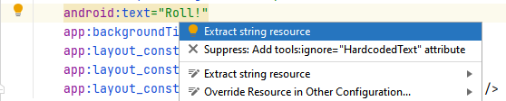
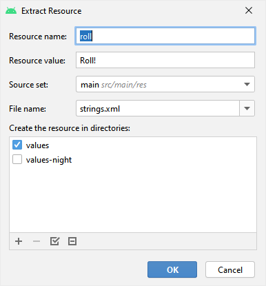
Utwórz kolor "myBlue". Naciśnij Alt+Enter na podświetlonym błędzie "myBlue", wybierz Create color value resource i w kolejnym oknie wybierz odpowiedni odcień niebieskiego.
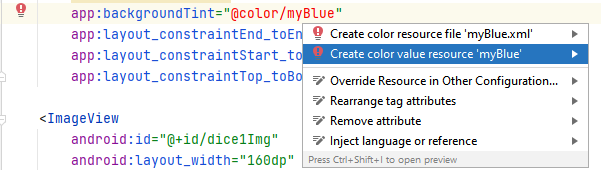
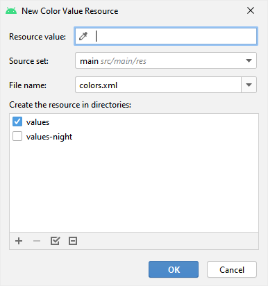
Ostateczny kod XML (activity_main.xml) powinien wyglądać mniej więcej tak (upewnij się, że używasz wyeksportowanych zasobów @string/...):
<?xml version="1.0" encoding="utf-8"?>
<androidx.constraintlayout.widget.ConstraintLayout
xmlns:android="http://schemas.android.com/apk/res/android"
xmlns:app="http://schemas.android.com/apk/res-auto"
xmlns:tools="http://schemas.android.com/tools"
android:layout_width="match_parent"
android:layout_height="match_parent"
tools:context=".MainActivity">
<TextView
android:id="@+id/rollResultText"
android:layout_width="0dp"
android:layout_height="wrap_content"
android:text="@string/hello_world"
android:textAlignment="center"
android:textSize="18sp"
app:layout_constraintBottom_toBottomOf="parent"
app:layout_constraintLeft_toLeftOf="parent"
app:layout_constraintRight_toRightOf="parent"
app:layout_constraintTop_toTopOf="parent" />
<Button
android:id="@+id/rollButton"
android:layout_width="0dp"
android:layout_height="wrap_content"
android:layout_marginStart="16dp"
android:layout_marginTop="16dp"
android:layout_marginEnd="16dp"
android:text="@string/roll"
app:backgroundTint="@color/myBlue"
app:layout_constraintEnd_toEndOf="parent"
app:layout_constraintStart_toStartOf="parent"
app:layout_constraintTop_toBottomOf="@+id/rollResultText" />
<ImageView
android:id="@+id/dice1Img"
android:layout_width="160dp"
android:layout_height="200dp"
android:layout_marginStart="16dp"
android:layout_marginBottom="16dp"
app:layout_constraintBottom_toTopOf="@+id/rollResultText"
app:layout_constraintStart_toStartOf="parent"
tools:ignore="ContentDescription"
app:srcCompat="@drawable/dice_2" />
<ImageView
android:id="@+id/dice2Img"
android:layout_width="160dp"
android:layout_height="200dp"
android:layout_marginEnd="16dp"
android:layout_marginBottom="16dp"
app:layout_constraintBottom_toTopOf="@+id/rollResultText"
app:layout_constraintEnd_toEndOf="parent"
app:srcCompat="@drawable/dice_1" />
</androidx.constraintlayout.widget.ConstraintLayout>
Aplikacje systemu Android wykorzystują klasę aktywności (ang. Activity) jako punkt wejścia. Aktywność udostępnia również obszar do rysowania interfejsu użytkownika oraz umożliwia interakcję użytkownika z aplikacją. Dobrą praktyką jest minimalizacja liczby aktywności w aplikacji. Preferowanym modelem jest model jednej aktywności.
Ważnym aspektem aktywności jest jej cykl życia, który definiuje kolejne etapy jej działania – od uruchomienia aż do zamknięcia. System Android zarządza cyklem życia, przechodząc przez następujące stany:
onCreate() – wywoływana podczas inicjalizacji aktywności, odpowiada za tworzenie interfejsu użytkownika oraz załadowanie zasobów,onStart() – aktywność staje się widoczna na ekranie,onResume() – aktywność przechodzi na pierwszy plan, umożliwiając użytkownikowi interakcję,onPause() – aktywność schodzi z pierwszego planu, np. przesłania ją okno dialogowe,onStop() – aktywność przestaje być widoczna, ale nadal pozostaje w pamięci,onRestart() – wywoływana, gdy aktywność zatrzymana wcześniej przez onStop() wraca na ekran (np. użytkownik wraca do aplikacji). Po niej system wywołuje ponownie onStart(),onDestroy() – aktywność zostaje usunięta z pamięci, np. w wyniku zamknięcia aplikacji.Otwórz plik MainActivity.kt i przeanalizuj jego zawartość.
package com.mr.diceroller
import android.os.Bundle
import androidx.appcompat.app.AppCompatActivity
class MainActivity : AppCompatActivity() {
override fun onCreate(savedInstanceState: Bundle?) {
super.onCreate(savedInstanceState)
setContentView(R.layout.activity_main)
}
}
Widzimy klasę o nazwie MainActivity, która rozszerza klasę AppCompatActivity. Podstawowa implementacja klasy MainActivity musi przesłonić (override) metodę onCreate() swojej klasy nadrzędnej. Metoda onCreate to pierwsza metoda cyklu życia, która jest uruchamiana, gdy użytkownik startuje aplikację. W podstawowej implementacji to właśnie w tym miejscu określasz układ, który powinien być używany przez tę aktywność, korzystając z metody setContentView(). Plik układu jest określony przez zasób zapisany w automatycznie generowanym pliku R.
Zmodyfikuj kod klasy MainActivity (dodaj import android.util.Log):
package com.mr.diceroller
import android.os.Bundle
import android.util.Log
import androidx.appcompat.app.AppCompatActivity
class MainActivity : AppCompatActivity() {
override fun onCreate(savedInstanceState: Bundle?) {
super.onCreate(savedInstanceState)
Log.i(localClassName, "onCreate")
setContentView(R.layout.activity_main)
}
override fun onStart() {
super.onStart()
Log.i(localClassName, "onStart")
}
override fun onResume() {
super.onResume()
Log.i(localClassName, "onResume")
}
override fun onPause() {
super.onPause()
Log.i(localClassName, "onPause")
}
override fun onStop() {
super.onStop()
Log.i(localClassName, "onStop")
}
override fun onRestart() {
super.onRestart()
Log.i(localClassName, "onRestart")
}
override fun onDestroy() {
super.onDestroy()
Log.i(localClassName, "onDestroy")
}
}
Przesłoniliśmy wszystkie metody cyklu życia. Zazwyczaj nie ma potrzeby nadpisywania ich wszystkich, ale ten przykład pokaże, jak i kiedy uruchamiana jest każda z metod. Kod ten używa również metody Log, która pozwala na wyświetlanie wiadomości w konsoli Logcat. Ta metoda przyjmuje dwa argumenty: tag (znacznik) oraz wiadomość do wyświetlenia. Tag może być użyty do identyfikacji źródła logu.
Uruchom aplikację i obserwuj logi w oknie Logcat.
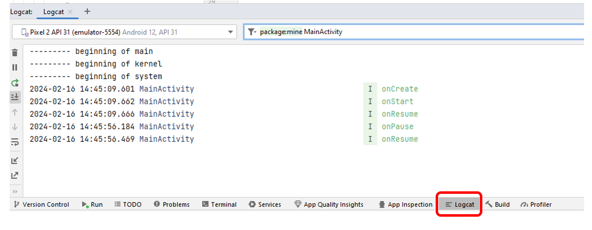
Sprawdź, jak zmieniają się logi w następujących sytuacjach:
onRestart),Kliknij prawym przyciskiem myszy na nazwę pakietu w folderze java+kotlin i wybierz New -> Kotlin Class/File. Wpisz nazwę: Dice.
package com.mr.diceroller
class Dice(private val numSides: Int = 6) {
// To jest definicja głównego konstruktora
// Domyślna wartość dla numSides to 6
// Publiczna funkcja zdefiniowana wewnątrz klasy.
// Zwraca losową liczbę całkowitą pomiędzy 1 a numSides.
fun roll(): Int {
return (1..numSides).random()
}
}
Implementacja klasy jest prosta. Posiada pojedynczy konstruktor z jednym parametrem domyślnym, który ustala liczbę ścian kości. Pojedyncza funkcja należąca do tej klasy (roll()) generuje losową liczbę z zakresu od 1 do numSides.
Wróć do MainActivity.kt i zmodyfikuj metodę onCreate (dodaj import android.widget.Button):
override fun onCreate(savedInstanceState: Bundle?) {
super.onCreate(savedInstanceState)
Log.i(localClassName, "onCreate")
setContentView(R.layout.activity_main)
val button = findViewById<Button>(R.id.rollButton)
button.setOnClickListener {
rollDice()
}
}
W kodzie powyżej utworzyliśmy zmienną (val) o nazwie button, która pozwoli nam uzyskać dostęp do przycisku z naszego układu. Widok (View) w układzie jest rozpoznawany po jego id, a połączenie zapewnia metoda findViewById. Następnie tworzymy procedurę obsługującą zdarzenie kliknięcia w przycisk, używając metody setOnClickListener. W ciele (lambda) tego nasłuchiwacza (tzw. listenera) wywołujemy metodę rollDice().
Metoda rollDice() jeszcze nie istnieje, więc użyj skrótu Alt+Enter na podświetlonym błędzie, by stworzyć nową funkcję:
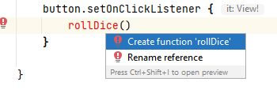
Następnie dodaj poniższe funkcje w MainActivity wraz z brakującymi importami (Alt+Enter):
import android.graphics.Color
import android.widget.ImageView
import android.widget.TextView
private fun rollDice() {
val dice = Dice() // to jest równoważne z Dice(6)
val diceRoll1 = dice.roll() // pierwszy rzut kością
val diceRoll2 = dice.roll() // drugi rzut kością
updateText(diceRoll1, diceRoll2) // aktualizuje widok tekstu wynikiem
updateImg(diceRoll1, diceRoll2) // aktualizuje widoki obrazków kości
}
private fun updateText(diceRoll1: Int, diceRoll2: Int) {
// Pobierz widok TextView z układu
val rollResultText = findViewById<TextView>(R.id.rollResultText)
// Ustaw tekst
rollResultText.text = "Rolled: $diceRoll1 & $diceRoll2"
// Tworzenie koloru (RGB) dla tekstu
// Każdy składnik koloru może mieć wartość pomiędzy 0 a 255
// Składnik czerwony (losowa liczba od 0 do 255)
val red = (0..255).random()
// Składnik zielony (na podstawie sumy wartości z kości)
val green = (((diceRoll1 + diceRoll2) / 12.0) * 255).toInt()
// Składnik niebieski (na podstawie iloczynu wartości z kości)
val blue = (((diceRoll1 * diceRoll2) / 36.0) * 255).toInt()
// Ustaw wygenerowany kolor na tekst
rollResultText.setTextColor(Color.rgb(red, green, blue))
Log.i(localClassName, "Text color: R:$red, G:$green, B:$blue")
}
private fun updateImg(diceRoll1: Int, diceRoll2: Int) {
// Pobierz ImageView z układu
val dice1Img = findViewById<ImageView>(R.id.dice1Img)
val dice2Img = findViewById<ImageView>(R.id.dice2Img)
// Zmień obraz bazując na wygenerowanej wartości, używając naszej funkcji pomocniczej
dice1Img.setImageResource(resolveDrawable(diceRoll1))
dice2Img.setImageResource(resolveDrawable(diceRoll2))
}
private fun resolveDrawable(diceValue: Int): Int {
// Zwróć id zasobu graficznego (drawable) w zależności od wartości kości
return when (diceValue) {
1 -> R.drawable.dice_1
2 -> R.drawable.dice_2
3 -> R.drawable.dice_3
4 -> R.drawable.dice_4
5 -> R.drawable.dice_5
else -> R.drawable.dice_6
}
}
Zwróć uwagę, jak w rollDice() tworzymy obiekt klasy Dice, rzucamy dwukrotnie i zapisujemy wynik do zmiennych, które są dalej przekazywane do funkcji aktualizujących tekst i obrazki.
Zbuduj i uruchom aplikację!
W pliku MainActivity.kt odnajdź linijkę:
rollResultText.setTextColor(Color.rgb(red, green, blue))
Kliknij w puste miejsce zaraz obok numeru linii (na marginesie). W ten sposób dodasz punkt wstrzymania (breakpoint - pojawi się czerwona kropka).
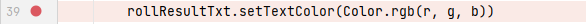
Breakpointy są przydatne do debugowania i testowania aplikacji. Pozwalają one aplikacji zatrzymać się, gdy osiągnie ten konkretny punkt w kodzie.
Uruchom aplikację w trybie debugowania, wciskając przycisk z ikoną robaka (Debug 'app', Shift + F9). Naciśnij przycisk rzutu w aplikacji - debugger powinien zatrzymać się na wyznaczonym breakpoincie. Możesz przeanalizować wartości zmiennych w oknie u dołu.
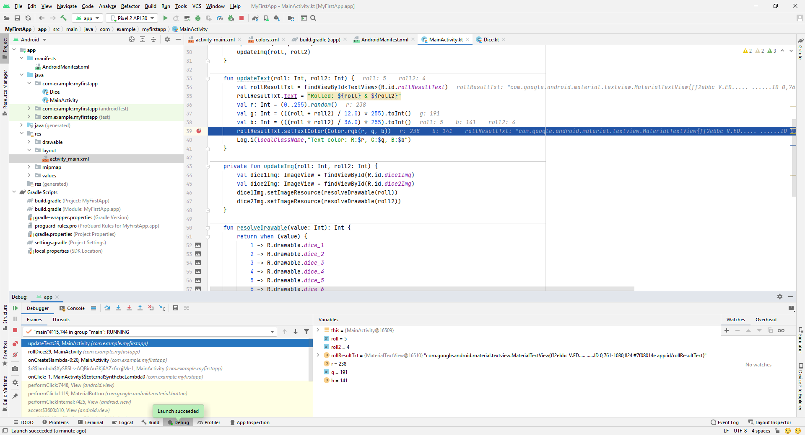
Utwórz nowy plik layoutu klikając prawym przyciskiem myszy na folderze layout i wybierając New -> Layout Resource File. Nadaj mu dowolną nazwę i kliknij OK. W nowym pliku zmień id głównego elementu ConstraintLayout na crash_test.
Teraz celowo zepsujmy aplikację. Zmodyfikuj metodę rollDice() (dodaj import android.view.View):
private fun rollDice() {
val dice = Dice()
val diceRoll1 = dice.roll()
val diceRoll2 = dice.roll()
// Próbujemy pobrać widok 'crash_test', którego NIE MA w obecnie wyświetlanym układzie (activity_main)
val crash = findViewById<View>(R.id.crash_test)
val screen = crash.height // <-- Tutaj wywołamy atrybut na obiekcie, który jest null!
updateText(diceRoll1, diceRoll2)
updateImg(diceRoll1, diceRoll2)
}
Uruchom aplikację. Wyrzuci ona błąd i nieoczekiwanie zakończy działanie przy próbie rzutu kośćmi.
Przejdź do zakładki Logcat, zmień poziom szczegółowości (Verbosity level) na Error i wpisz w polu wyszukiwania MainActivity (lub level:error). Znajdziesz stos wywołań błędu (stack trace).
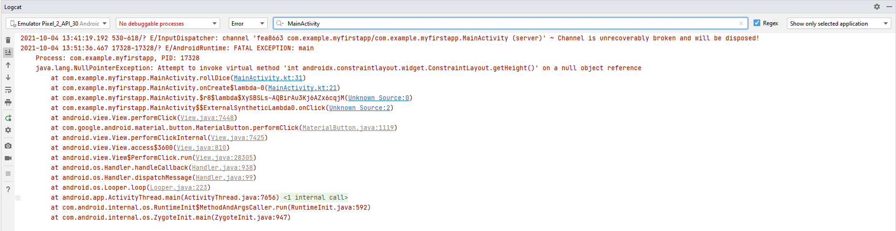
Z wiadomości możemy łatwo odnaleźć linię, która spowodowała crash (NullPointerException). W Kotlinie ten typ błędu (wywołanie metody na obiekcie, który nie istnieje) może być łatwo obsłużony poprzez operator bezpiecznego wywołania (safe call operator) ?.
Dodaj operator ? do linii wywołującej problem:
val screen = crash?.height
Uruchom aplikację ponownie i sprawdź, czy problem został rozwiązany. (Wartość screen po prostu przyjmie bezpiecznie wartość null zamiast powodować wyjątek).
W tej sekcji rozbudujemy aplikację. Zaimplementujemy grę pomiędzy dwoma graczami, polegającą na zdobyciu jak największej ilości punktów. Gra pozwala modyfikować liczbę kości oraz używać mechaniki zatrzymywania ("hold") dla dowolnej kostki przed rzutem.
Wybierz z górnego menu File -> New -> Activity -> Empty Views Activity. W oknie podaj nazwę pierwszej z nich: MainActivityExtended. Powtórz ten proces dla kolejnej aktywności o nazwie SettingsActivity.
Zajrzyj do AndroidManifest.xml i zobacz zmiany (wszystkie aktywności zostały tam dopisane).
Aplikacja uruchamia aktywność oznaczoną w manifeście filtrem intencji MAIN + LAUNCHER. Obecnie jest to wciąż MainActivity, więc po uruchomieniu zobaczysz stary ekran. Aby uruchamiać nową grę, przenieś intent-filter z MainActivity do MainActivityExtended:
<activity
android:name=".MainActivity"
android:exported="false" />
<activity
android:name=".MainActivityExtended"
android:exported="true">
<intent-filter>
<action android:name="android.intent.action.MAIN" />
<category android:name="android.intent.category.LAUNCHER" />
</intent-filter>
</activity>
<activity
android:name=".SettingsActivity"
android:exported="false" />
Atrybut android:exported="true" jest wymagany dla aktywności z intent-filter, ponieważ uruchamia ją system. Pozostałe aktywności są wewnętrzne, więc mają exported="false".
W dalszej części ćwiczenia pracujemy wyłącznie na MainActivityExtended i SettingsActivity. MainActivity zostaje w projekcie jako punkt odniesienia (wersja z poprzednich kroków).
MAIN, a za co kategoria LAUNCHER?intent-filter zostanie w MainActivity i znajdzie się w MainActivityExtended?intent-filter ze wszystkich aktywności i spróbuj uruchomić aplikację. Jaki komunikat zwraca Android Studio?MainActivityExtended ma exported="true", a SettingsActivity exported="false"?W rozszerzeniu aplikacji wykorzystamy mechanizm View Binding. Pozwala ono na prostsze powiązanie kodu z układem (layoutem) z użyciem automatycznie generowanej klasy wiązania (binding class). View binding jest obecnie preferowanym sposobem na uzyskiwanie dostępu do widoków XML w kodzie i zastępuje żmudne używanie metody findViewById. //TODO Przejdź do build.gradle.kts (Module :app) i dodaj viewBinding do sekcji android:
android {
namespace = "com.mr.diceroller"
compileSdk = 34
// ...
buildFeatures {
viewBinding = true
}
}
Zsynchronizuj projekt.
activity_settings.xml? A jak nazwałaby się dla pliku item_dice_row.xml? Jaka jest reguła?activity_main_extended.xml zmieniasz id przycisku z rollButton na rollBtn. Co się stanie z kodem używającym binding.rollButton? A z kodem używającym findViewById<Button>(R.id.rollButton) (zwróć uwagę, że activity_main.xml nadal ma przycisk o takim id)? Kiedy dowiesz się o błędzie w każdym z przypadków?binding.root i dlaczego przekazujemy to do setContentView()?Dla SettingsActivity (activity_settings.xml) utwórz układ posiadający:
Switch - służący do przełączania funkcji zatrzymania kości (np. id="@+id/enableHoldSwitch").Spinner - służący do wyboru ilości kości (np. id="@+id/numDiceSpinner").Button - przycisk potwierdzenia (np. id="@+id/confirmButton").TextView - etykieta dla wyboru ilości kości.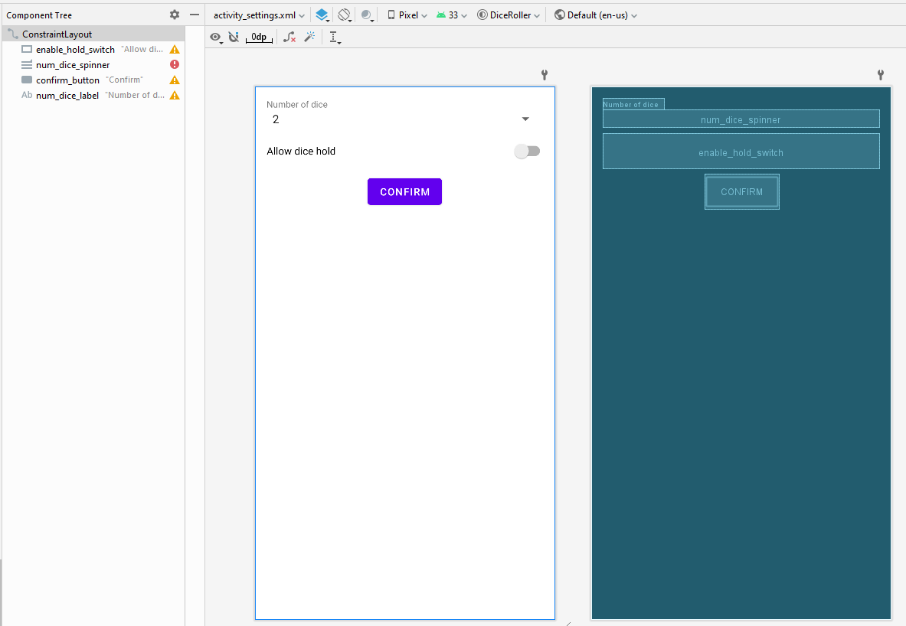
Do działania Spinnera potrzebujemy zdefiniować tablicę ciągów. W pliku strings.xml dodaj:
<string-array name="num_dice_spinner_entries">
<item>2</item>
<item>3</item>
<item>4</item>
<item>5</item>
</string-array>
Przypisz te wpisy do Spinnera w activity_settings.xml używając atrybutu android:entries="@array/num_dice_spinner_entries".
Dla MainActivityExtended (activity_main_extended.xml) przygotuj:
TextView - do wyświetlania obecnego gracza (id="@+id/playerLabel") oraz wyniku rzutu (id="@+id/rollResultText").Button - do rzucania (id="@+id/rollButton").ImageView - do wyświetlania kości (dice1Img do dice5Img). Ustaw im atrybut android:tintMode na "multiply".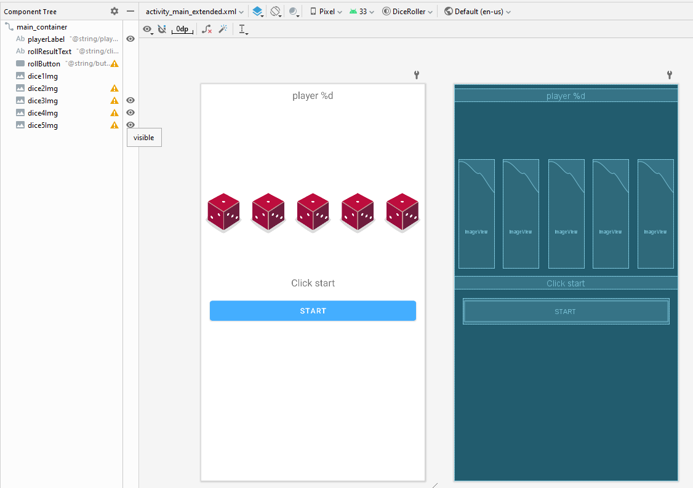
SettingsActivity ustawia Spinner przez setSelection(numDice - 2). Jaka niepisana umowa łączy tę linię z string-array w strings.xml? Co się stanie, jeśli dodasz do tablicy na początku pozycję 1?tintMode="multiply", a stan „bez podświetlenia" to kolor white. Jaki kolor będzie miał biały piksel obrazka po pomnożeniu przez white, a jaki przez yellow (R=255, G=255, B=0)? Co stanie się z czarnymi oczkami kostki i dlaczego multiply jest tu lepszy niż zwykłe nałożenie koloru?Menu zostanie użyte do uruchamiania SettingsActivity. Utwórz katalog zasobów typu Menu (res -> New -> Android Resource Directory, typ: menu), a w nim plik menu.xml z jednym elementem opcji (Settings). Zobacz jak to zrobić na nagraniu:
W kodzie MainActivityExtended.kt:
override fun onCreateOptionsMenu(menu: Menu?): Boolean {
// Utworzenie menu za pomocą menuInflater i zasobu R.menu.menu
val inflater: MenuInflater = menuInflater
inflater.inflate(R.menu.menu, menu)
return super.onCreateOptionsMenu(menu)
}
override fun onOptionsItemSelected(item: MenuItem): Boolean {
// Obsługa wyboru elementu z menu
when (item.itemId) {
R.id.settings -> startSettingsActivity()
}
return super.onOptionsItemSelected(item)
}
Aby wyświetlić menu, musimy przesłonić metodę onCreateOptionsMenu i wskazać docelowy plik zasobów. Wybory użytkownika wyłapujemy, nadpisując onOptionsItemSelected.
menu.xml nadałeś elementowi id action_settings, a w kodzie jest R.id.settings. Co się stanie i kiedy?resetGame().Dodajmy do MainActivityExtended.kt deklarację mechanizmu View Binding i podstawowych zmiennych.
private lateinit var binding: ActivityMainExtendedBinding // Połączenie z układem
private var numDice: Int = 2 // Ilość kości w grze
private var isHoldEnabled: Boolean = true // Czy gracz może wstrzymywać kości?
override fun onCreate(savedInstanceState: Bundle?) {
super.onCreate(savedInstanceState)
// Powołanie do życia układu graficznego.
// Dzięki View Binding nie ma już potrzeby wywoływania findViewById.
binding = ActivityMainExtendedBinding.inflate(layoutInflater)
setContentView(binding.root)
}
View binding zastępuje potrzebę używania findViewById. Poprzez utworzenie zmiennej typu binding możemy odnosić się do widoków w układzie wywołując po prostu binding.idWidoku. Zauważ użycie słowa kluczowego lateinit - mówi to kompilatorowi, że zmienna będzie zainicjalizowana później w kodzie (w onCreate).
Zaimplementuj uruchamianie ustawień:
private fun startSettingsActivity() {
// Utworzenie Intencji jawnej w celu wystartowania SettingsActivity
val intent = Intent(this, SettingsActivity::class.java).apply {
// Dodaj wartość typu Int oraz klucz przechowywany w resources
putExtra(getString(R.string.num_dice_key), numDice)
// Dodaj wartość typu Boolean
putExtra(getString(R.string.hold_enable_key), isHoldEnabled)
// Wartości te (tzw. Extras) będą mogły zostać odzyskane z użyciem kluczy
}
// Wystartowanie aktywności z pomocą zmiennej Launchera (patrz niżej)
launchSettingsActivity.launch(intent)
}
Uruchamiamy SettingsActivity tworząc jawną Intencję (explicit Intent). Przekazujemy do niej parametry startowe wywołując putExtra(). Utwórz brakujące wpisy kluczy w pliku strings.xml.
Zarejestruj wywołanie zwrotne (callback) dla powracającego rezultatu z aktywności ustawień:
// Rejestracja callbacku dla wyniku z SettingsActivity.
// Kod ten zostanie wywołany, gdy wrócimy z widoku ustawień.
private val launchSettingsActivity =
registerForActivityResult(ActivityResultContracts.StartActivityForResult()) { result ->
if (result.resultCode == RESULT_OK) {
// Wykonaj operacje tylko, jeśli rezulat jest pozytywny (RESULT_OK)
// Pobierz dane z intencji result.data (jeśli nie jest nullem używamy .let)
result.data?.let { data ->
numDice = data.getIntExtra(getString(R.string.num_dice_key), 2)
isHoldEnabled = data.getBooleanExtra(getString(R.string.hold_enable_key), true)
// Zastosuj ustawienia (applySettings zresetuje też grę,
// dzięki czemu każda zmiana ustawień rozpoczyna rozgrywkę od nowa)
applySettings()
// Pokaż pop-up (Snackbar) z potwierdzeniem
Snackbar.make(
binding.root,
"Current settings: numDice: $numDice, isHoldEnabled: $isHoldEnabled",
Snackbar.LENGTH_SHORT
).show()
}
}
}
Zmienna launchSettingsActivity zostaje użyta do uruchomienia ustawień oraz nasłuchiwania na odesłany po jej zamknięciu rezultat. Mechanizm registerForActivityResult stanowi część nowego Activity Result API. Ignoruj na razie ostrzeżenia o brakujących funkcjach applySettings - dopiszemy je później.
SettingsActivity używamy jawnej?num_dice_key, hold_enable_key) trzymamy w strings.xml. Co się stanie, jeśli w SettingsActivity pomylisz się w kluczu? Czy dostaniesz błąd kompilacji, wyjątek, czy nic? A co, jeśli pomylisz nazwę zasobu R.string.…?resultCode trafi do callbacku? Co zrobi callback? Czy pojawi się Snackbar?launchSettingsActivity jest polem klasy inicjalizowanym przy tworzeniu obiektu, a nie tworzymy go w startSettingsActivity()? Co by się stało przy rejestracji w obsłudze kliknięcia?registerForActivityResult odwołuje się do binding, które jest lateinit i w chwili tworzenia pola jeszcze niezainicjalizowane. Dlaczego aplikacja się nie wysypuje?2 i true w getIntExtra(..., 2) oraz getBooleanExtra(..., true)? Kiedy zostaną użyte?startSettingsActivity() zmień putExtra(..., numDice) na putExtra(..., numDice.toString()), nie zmieniając SettingsActivity. Co pokaże Spinner? Co znajdziesz w Logcat?W tym kodzie pobieramy intencję przesłaną z MainActivityExtended, nadpisujemy UI odczytanymi zmiennymi i przypisujemy akcję dla przycisku, która zbuduje intencję powrotną:
class SettingsActivity : AppCompatActivity() {
private lateinit var binding: ActivitySettingsBinding
override fun onCreate(savedInstanceState: Bundle?) {
super.onCreate(savedInstanceState)
// Inicjalizacja View Binding
binding = ActivitySettingsBinding.inflate(layoutInflater)
setContentView(binding.root)
// Odzyskanie ustawień przesłanych przez Intent
val numDice = intent.getIntExtra(getString(R.string.num_dice_key), 2)
val isHoldEnabled = intent.getBooleanExtra(getString(R.string.hold_enable_key), true)
// Odwzorowanie ustawień na interfejs
binding.enableHoldSwitch.isChecked = isHoldEnabled
// Założenie, że gramy od 2 do 5 kośćmi. Ustawia selekcję w Spinnerze.
if (numDice in 2..5) {
binding.numDiceSpinner.setSelection(numDice - 2)
}
binding.confirmButton.setOnClickListener {
// Pobranie danych ze Spinnera i zamiana na int
val spinnerSelection = binding.numDiceSpinner.selectedItem.toString().toInt()
val holdEnable = binding.enableHoldSwitch.isChecked
// Stworzenie pustej intencji przechowującej tylko wynik działania
val result = Intent().apply {
putExtra(getString(R.string.num_dice_key), spinnerSelection)
putExtra(getString(R.string.hold_enable_key), holdEnable)
}
// Ustawienie kodu wyniku (RESULT_OK) z intencją zawierającą dane
setResult(RESULT_OK, result)
// Zamknięcie aktywności i powrót do poprzedniej (MainActivityExtended)
finish()
}
}
}
SettingsActivity bierze się zmienna intent? Którą intencję reprezentuje?finish(). Co zobaczy użytkownik po kliknięciu „Confirm"? Kiedy (i czy w ogóle) callback w MainActivityExtended otrzyma wynik?finish(), ale usuń setResult(...). Jak zachowa się aplikacja i dlaczego?setResult + finish(), a nie przez startActivity(Intent(this, MainActivityExtended::class.java))? Opisz skutki dla stosu aktywności (back stack) i dla stanu rozpoczętej gry..toInt() jest .toString() w binding.numDiceSpinner.selectedItem.toString().toInt()?MainActivityExtended.kt)Czas na dopisanie mechaniki gry do MainActivityExtended.
Stan gry przechowujemy w osobnej zmiennej (phase), a nie w tekście przycisku. Tekst jest tylko prezentacją stanu. Gdybyśmy rozpoznawali stan przez porównanie napisu, zmiana lub tłumaczenie tekstu zepsułoby logikę gry. Gra może znajdować się w jednej z trzech faz:
| Faza | Znaczenie | Tekst przycisku |
|---|---|---|
WAITING | Oczekiwanie na start tury (gracza 1 lub 2) | Start / Player 2 start |
ROLLING | Trwa tura, można rzucać kośćmi | Roll |
FINISHED | Koniec gry | przycisk nieaktywny |
Najpierw dodaj zmienne pomocnicze:
// Fazy gry (stan przechowujemy w zmiennej, a nie w tekście przycisku)
private enum class GamePhase { WAITING, ROLLING, FINISHED }
private var phase = GamePhase.WAITING
// Tablice pozwalające nam na łatwą manipulację wieloma ImageView za pomocą pętli
private val diceImgArray by lazy{ arrayOf(binding.dice1Img, binding.dice2Img, binding.dice3Img, binding.dice4Img, binding.dice5Img)}
private val diceStatesArray = arrayOf(false, false, false, false, false) // Informacje czy dana kość jest "zatrzymana"
private val diceValuesArray = arrayOf(1, 1, 1, 1, 1) // Obecnie wylosowane liczby
private var currentPlayer = 0 // Indeks obecnego gracza (0 lub 1). Użytkownikowi pokazujemy numer o 1 większy
private val playerScores = arrayOf(0, 0)
private var rollCount = 0 // Ilość wykonanych rzutów (tura się kończy gdy rollCount == numDice)
Dodaj do strings.xml zasoby tekstowe używane w poniższym kodzie (nazwy odpowiadają faktycznej treści napisów):
<string name="button_start">Start</string>
<string name="button_roll">Roll</string>
<string name="button_second_start">Player 2 start</string>
<string name="click_start">Click Start to begin</string>
<string name="click_roll">Click Roll to roll the dice</string>
<string name="rolled_msg">Rolled: </string>
<string name="player_label_format">Player %1$d</string>
Zaimplementuj metody wyłapywania kliknięć z onCreate:
override fun onCreate(savedInstanceState: Bundle?) {
super.onCreate(savedInstanceState)
binding = ActivityMainExtendedBinding.inflate(layoutInflater)
setContentView(binding.root)
// Nasłuchiwacze kostek rejestrujemy tylko raz.
// To, czy kostki reagują na kliknięcia, kontroluje updateDiceClickable()
setDiceClick()
applySettings()
// Nasłuchiwanie na przycisk rzucania - zachowanie zależy od fazy gry
binding.rollButton.setOnClickListener {
when (phase) {
GamePhase.WAITING -> startTurn()
GamePhase.ROLLING -> rollDices()
GamePhase.FINISHED -> Unit // przycisk jest wtedy nieaktywny
}
}
}
Dopisz metody zarządzające widokami i przebiegiem tury:
private fun applySettings() {
resetGame() // każda zmiana ustawień zaczyna grę od nowa
// Chowanie nieużywanych kości
for (num in 1..5) {
// View.GONE chowa element na dobre (przestaje zajmować miejsce)
diceImgArray[num - 1].visibility = if (num <= numDice) View.VISIBLE else View.GONE
}
}
private fun resetGame() {
currentPlayer = 0
playerScores[0] = 0
playerScores[1] = 0
rollCount = 0
phase = GamePhase.WAITING
binding.rollResultText.text = getString(R.string.click_start)
binding.playerLabel.visibility = View.INVISIBLE
binding.rollButton.text = getString(R.string.button_start)
binding.rollButton.isEnabled = true
resetTurn()
updateDiceClickable()
}
private fun startTurn() {
phase = GamePhase.ROLLING
resetTurn() // wyzerowanie kości i blokad "hold" na początku tury każdego gracza
binding.rollButton.text = getString(R.string.button_roll)
binding.playerLabel.visibility = View.VISIBLE
binding.rollResultText.text = getString(R.string.click_roll)
updateDiceClickable()
}
private fun resetTurn() {
for (num in 0..4) {
diceValuesArray[num] = 1 // reset wartości
diceStatesArray[num] = false // ściągnięcie blokad "hold"
diceImgArray[num].let {
changeDiceTint(it, false)
it.setImageResource(resolveDrawable(1))
}
}
// currentPlayer liczymy od 0, ale użytkownik widzi "Player 1" i "Player 2"
binding.playerLabel.text = getString(R.string.player_label_format, currentPlayer + 1)
}
// Skopiuj tu też starą funkcję resolveDrawable
private fun resolveDrawable(diceValue: Int): Int {
return when (diceValue) {
1 -> R.drawable.dice_1
2 -> R.drawable.dice_2
3 -> R.drawable.dice_3
4 -> R.drawable.dice_4
5 -> R.drawable.dice_5
else -> R.drawable.dice_6
}
}
private fun changeDiceTint(img: ImageView, highlight: Boolean) {
// Podświetlenie na żółto zaznaczonych kostek (potrzebny zdefiniowany kolor yellow i white w xml)
img.imageTintList = ColorStateList.valueOf(
getColor(if (highlight) R.color.yellow else R.color.white)
)
}
Dodaj logikę trzymania kości i ich rzutów:
private fun setDiceClick() {
for ((diceIdx, diceImg) in diceImgArray.withIndex()) {
diceImg.setOnClickListener {
// Zamiana (toggle) stanu blokady po kliknięciu
diceStatesArray[diceIdx] = !diceStatesArray[diceIdx]
changeDiceTint(diceImg, diceStatesArray[diceIdx])
}
}
}
// Jedno miejsce decydujące, czy kostki reagują na kliknięcia.
// Zatrzymywać kości można tylko wtedy, gdy:
// - funkcja "hold" jest włączona w ustawieniach,
// - trwa tura (faza ROLLING),
// - kości zostały już rzucone przynajmniej raz (rollCount > 0).
private fun updateDiceClickable() {
val canHold = isHoldEnabled && phase == GamePhase.ROLLING && rollCount > 0
for ((idx, diceImg) in diceImgArray.withIndex()) {
diceImg.isClickable = canHold && idx < numDice
diceImg.isFocusable = diceImg.isClickable
}
}
private fun rollDices() {
val dice = Dice()
for (i in 0 until numDice) {
if (!diceStatesArray[i]) { // Rzucamy tylko niezablokowanymi kośćmi
diceValuesArray[i] = dice.roll()
}
}
updateTextAndImages()
rollCount += 1
if (rollCount == numDice) {
endTurn()
} else {
updateDiceClickable() // po pierwszym rzucie można już zatrzymywać kości
}
}
private fun endTurn() {
if (currentPlayer == 1) { // Koniec gry
endGame()
} else {
currentPlayer = 1
rollCount = 0
phase = GamePhase.WAITING
binding.rollButton.text = getString(R.string.button_second_start)
updateDiceClickable()
}
}
private fun updateTextAndImages() {
val rolledText = StringBuilder(getString(R.string.rolled_msg))
var sum = 0
for (i in 0 until numDice) {
val rollValue = diceValuesArray[i]
sum += rollValue
rolledText.append("$rollValue")
if (i != numDice - 1) rolledText.append(", ") // Przecinki między wynikami
diceImgArray[i].setImageResource(resolveDrawable(rollValue))
}
playerScores[currentPlayer] = sum
rolledText.append("\nSum: $sum")
binding.rollResultText.text = rolledText.toString()
}
private fun endGame() {
phase = GamePhase.FINISHED
binding.rollButton.isEnabled = false
binding.playerLabel.visibility = View.INVISIBLE
updateDiceClickable()
// Oblicz zwycięzcę
val winner = when {
playerScores[0] == playerScores[1] -> -1 // Remis
playerScores[0] > playerScores[1] -> 0 // Wygrywa Gracz 1 (indeks 0)
else -> 1 // Wygrywa Gracz 2 (indeks 1)
}
// Użytkownik widzi numery graczy od 1, więc do indeksu dodajemy 1
val message = if (winner != -1) {
"Player ${winner + 1} wins with ${playerScores[winner]} points"
} else {
"Draw with ${playerScores[0]} points"
}
// Wyświetlenie wyniku w interaktywnym pasku Snackbar (z opcją zagrania ponownie)
Snackbar.make(
binding.root, message, Snackbar.LENGTH_INDEFINITE
).setAction("Start over") {
resetGame() // przywraca też aktywny przycisk
}.show()
}
Uruchom i przetestuj całą aplikację! Sprawdź w szczególności:
Start over).A. Stan i struktura
diceImgArray jest zadeklarowane z by lazy. Co by się stało, gdybyś zapisał je jako zwykłe private val diceImgArray = arrayOf(binding.dice1Img, ...)? W którym momencie i jaki błąd by wystąpił? Dlaczego lazy to naprawia?when (phase) jest gałąź GamePhase.FINISHED -> Unit, skoro „nic nie robi"? Co zrobi kompilator, jeśli ją usuniesz?currentPlayer liczymy od 0, a użytkownikowi pokazujemy currentPlayer + 1? W których miejscach kodu ta różnica ma znaczenie?B. Śledzenie przebiegu gry
numDice = 4? W której linii to ustalono? Czy to dobra zasada gry i jak ją zmienić, żeby liczba rzutów była niezależna od liczby kości?playerScores) i jaką zasadę punktacji to oznacza? Nazwa funkcji updateTextAndImages() sugeruje, że zajmuje się tylko widokiem. Co jest nie tak z takim układem odpowiedzialności i jak byś to uporządkował?C. Mechanika „hold"
updateDiceClickable() ma trzy warunki: isHoldEnabled, phase == ROLLING, rollCount > 0. Dla każdego z nich opisz, co złego mogłoby się stać, gdyby go zabrakło (zwróć uwagę, jaką wartość mają kości po resetTurn()).onCreate: najpierw applySettings(), potem setDiceClick(). Co zmieni się w zachowaniu aplikacji tuż po uruchomieniu (zanim klikniesz „Start")? Dlaczego? Co „naprawia" sytuację po pierwszym kliknięciu przycisku?setDiceClick() każda kostka zmienia stan własnego elementu diceStatesArray. Jak lambda „pamięta" indeks diceIdx?View.GONE. Co by się zmieniło przy View.INVISIBLE?D. Szukanie błędów
rollDices() pętlę z for (i in 0 until numDice) na for (i in 0..numDice). Przy jakiej liczbie kości aplikacja się zawiesi i z jakim wyjątkiem? Czy przy numDice = 2 widać jakikolwiek błąd? Co z tego wynika dla testowania?rollDices() warunek if (!diceStatesArray[i]) zastąpiono przez if (diceStatesArray[i]). Opisz, jak aplikacja będzie się zachowywać.startTurn() usunięto wywołanie resetTurn(). Wymień co najmniej trzy widoczne skutki w turze drugiego gracza.E. Cykl życia
numDice, isHoldEnabled)? endGame() używamy Snackbar.LENGTH_INDEFINITE, a w callbacku ustawień LENGTH_SHORT. Dlaczego? Co by się stało z grą po jej zakończeniu, gdyby w endGame() użyć LENGTH_SHORT?MainActivityExtended → Intent (extras) → SettingsActivity → wynik → callback → zmienna używana w rollDices().Najważniejsze informacje z tego laboratorium:
java+kotlin, zasoby (elementy interfejsu graficznego, kolory itp.) przechowywane są w res, a zewnętrzne biblioteki i konfiguracja budowania w plikach build.gradle.ViewGroups) oraz widoków właściwych (Views). Atrybuty elementów możemy zmieniać używając kodu XML lub za pomocą dedykowanego okna projektanta.width i height). Atrybut id używany jest do identyfikowania widoku w kodzie, a przy używaniu ConstraintLayout niezbędne jest zakotwiczenie co najmniej w poziomie i pionie.strings.xml.Alt+Enter - menu szybkich akcji / korektShift+F6 - zmiana nazwyCtrl+Alt+L - formatowanie (układanie) koduAndroidManifest.xml. Aktywność startowa jest wskazana przez intent-filter z MAIN i LAUNCHER. Metoda onCreate zawsze musi być przesłonięta, aby móc poprawnie załadować widok za pomocą setContentView.onSaveInstanceState, ViewModel).findViewById była tradycyjnie używana do łączenia obiektów z kodem, jednak View Binding stanowi jej znacznie lepszy i nowocześniejszy zamiennik.registerForActivityResult.Logcat jest bardzo użytecznym narzędziem przy odnajdywaniu błędów (debugowaniu).Snackbar to element używany do wyświetlania krótkich wiadomości pop-up dla użytkownika u dołu ekranu. Może również zawierać w sobie dedykowany przycisk akcji.